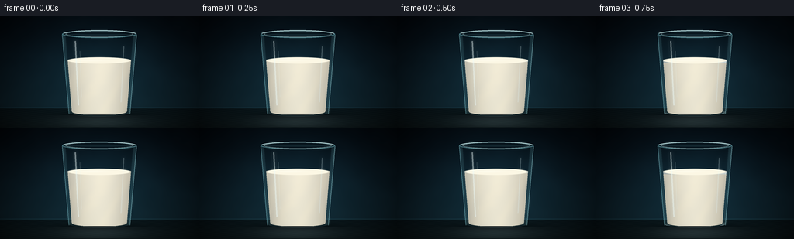
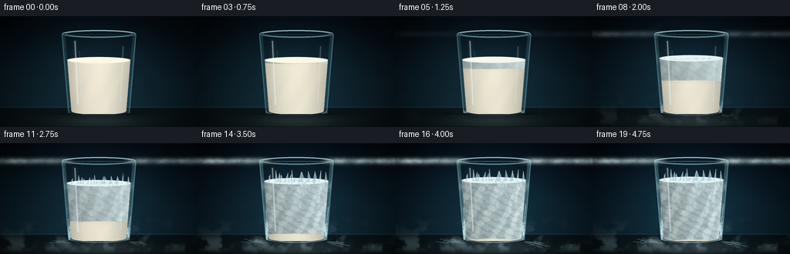
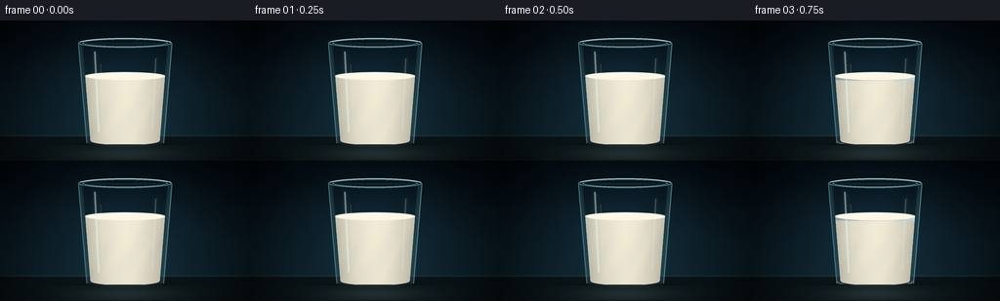
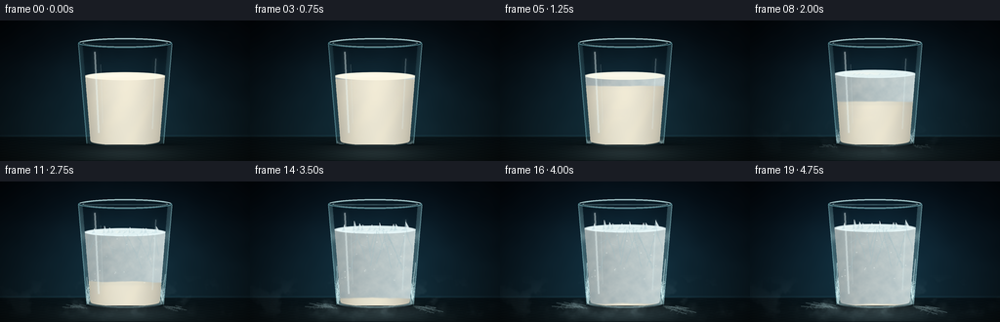
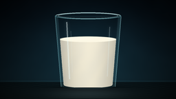
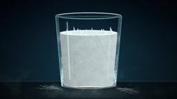
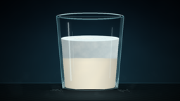
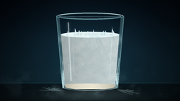
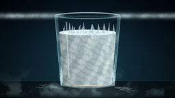
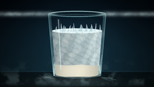

CODING AGENTS AS PIXEL WORLD MODELS
traex/DeepSeek-V4.1-Flash · phygen_093
点击播放 · 原生 RGB 像素
逐轮保存的候选
回放视频、检查图与代码变化。
每份候选均可单独播放。实际图片检查记录在下方工具轨迹中。
候选 01播放与检查图
点击播放 · 原生 RGB 像素


展开代码变化
--- 上一保存版本
+++ 本次保存版本
@@ -0,0 +1,608 @@
+"""Procedural RGB timelapse: a glass of milk freezing at low temperature."""
+
+from pathlib import Path
+
+import numpy as np
+from PIL import Image, ImageDraw, ImageFilter
+
+import artifact_io
+
+
+CASE_DIR = Path(__file__).resolve().parent
+W, H, N, FPS = 256, 144, 20, 4.0
+S = 4
+WW, HH = W * S, H * S
+
+CX = 128.0
+RIM_Y = 23.0
+BASE_Y = 126.5
+
+
+def clamp01(value):
+ return np.clip(value, 0.0, 1.0)
+
+
+def smoothstep(edge0, edge1, value):
+ x = clamp01((value - edge0) / (edge1 - edge0))
+ return x * x * (3.0 - 2.0 * x)
+
+
+def lerp(a, b, amount):
+ return a + (b - a) * amount
+
+
+def mix_color(a, b, amount):
+ return a * (1.0 - amount) + b * amount
+
+
+def scaled(value):
+ return int(round(value * S))
+
+
+def point(x, y):
+ return scaled(x), scaled(y)
+
+
+def smooth_noise(width, height, cell, seed):
+ rng = np.random.default_rng(seed)
+ grid_w = max(2, int(np.ceil(width / cell)) + 2)
+ grid_h = max(2, int(np.ceil(height / cell)) + 2)
+ grid = rng.random((grid_h, grid_w), dtype=np.float32)
+ image = Image.fromarray(np.round(grid * 255).astype(np.uint8), "L")
+ image = image.resize((width, height), Image.Resampling.BICUBIC)
+ return np.asarray(image, dtype=np.float32) / 255.0
+
+
+def fractal_noise(width, height, seed, base_cell):
+ result = np.zeros((height, width), dtype=np.float32)
+ weight_sum = 0.0
+ for octave, weight in enumerate((0.50, 0.28, 0.14, 0.08)):
+ cell = max(2.0, base_cell / (2**octave))
+ result += weight * smooth_noise(width, height, cell, seed + octave * 37)
+ weight_sum += weight
+ result /= weight_sum
+ return (result - result.min()) / (result.max() - result.min() + 1e-6)
+
+
+def mask_from_draw(draw_fn):
+ image = Image.new("L", (WW, HH), 0)
+ draw_fn(ImageDraw.Draw(image))
+ return np.asarray(image, dtype=np.float32) / 255.0
+
+
+def composite_color(image, color, alpha):
+ alpha = clamp01(alpha)[..., None]
+ return image * (1.0 - alpha) + np.asarray(color, dtype=np.float32) * alpha
+
+
+def composite_rgba(image, overlay):
+ base = Image.fromarray(np.clip(image, 0, 255).astype(np.uint8), "RGB").convert("RGBA")
+ return np.asarray(Image.alpha_composite(base, overlay).convert("RGB"), dtype=np.float32)
+
+
+def blurred_mask(mask, radius):
+ image = Image.fromarray(np.round(clamp01(mask) * 255).astype(np.uint8), "L")
+ image = image.filter(ImageFilter.GaussianBlur(radius * S))
+ return np.asarray(image, dtype=np.float32) / 255.0
+
+
+def outer_half_width(y):
+ q = np.clip((y - RIM_Y) / (BASE_Y - RIM_Y), 0.0, 1.0)
+ return 48.0 - 8.7 * q
+
+
+def inner_half_width(y):
+ q = np.clip((y - RIM_Y) / (BASE_Y - RIM_Y), 0.0, 1.0)
+ return 43.5 - 8.2 * q
+
+
+YY, XX = np.mgrid[0:HH, 0:WW].astype(np.float32)
+X = XX / S
+Y = YY / S
+
+NOISE_ICE = fractal_noise(WW, HH, 11, 20.0 * S)
+NOISE_FINE = fractal_noise(WW, HH, 29, 7.0 * S)
+NOISE_BG = fractal_noise(WW, HH, 47, 34.0 * S)
+NOISE_MIST = fractal_noise(WW, HH, 71, 18.0 * S)
+NOISE_FROST = fractal_noise(WW, HH, 101, 12.0 * S)
+
+
+def build_glass_masks():
+ def outer_shape(draw):
+ left = [(outer_half_width(y), y) for y in np.linspace(RIM_Y, 123.5, 80)]
+ points = [point(CX - half, y) for half, y in left]
+ points += [point(CX + half, y) for half, y in reversed(left)]
+ draw.polygon(points, fill=255)
+ draw.ellipse(
+ (scaled(CX - 39.3), scaled(119.8), scaled(CX + 39.3), scaled(129.2)),
+ fill=255,
+ )
+
+ def inner_shape(draw):
+ left = [(inner_half_width(y), y) for y in np.linspace(RIM_Y + 1.5, 123.0, 80)]
+ points = [point(CX - half, y) for half, y in left]
+ points += [point(CX + half, y) for half, y in reversed(left)]
+ draw.polygon(points, fill=255)
+ draw.ellipse(
+ (scaled(CX - 35.3), scaled(119.0), scaled(CX + 35.3), scaled(127.8)),
+ fill=255,
+ )
+
+ outer = mask_from_draw(outer_shape)
+ inner = mask_from_draw(inner_shape)
+ return outer, inner
+
+
+OUTER_MASK, INNER_MASK = build_glass_masks()
+WALL_MASK = clamp01(OUTER_MASK - INNER_MASK)
+
+
+def build_background(t):
+ yn = clamp01(Y / 119.0)
+ top = np.array([4.0, 11.0, 18.0], dtype=np.float32)
+ horizon = np.array([16.0, 38.0, 48.0], dtype=np.float32)
+ image = top + (horizon - top) * (yn[..., None] ** 1.35)
+
+ # A narrow cool source behind the glass keeps the transparent silhouette readable.
+ dx = (X - 128.0) / 62.0
+ dy = (Y - 72.0) / 55.0
+ glow = np.exp(-0.5 * (dx * dx + dy * dy))
+ glow = glow * (0.70 + 0.18 * t)
+ image += glow[..., None] * np.array([10.0, 26.0, 31.0], dtype=np.float32)
+
+ texture = (NOISE_BG - 0.5) * 6.0
+ image += texture[..., None] * np.array([0.45, 0.72, 0.85], dtype=np.float32)
+
+ # Dark reflective tabletop.
+ table = Y >= 118.5
+ table_y = clamp01((Y - 118.5) / 25.5)
+ table_color = (
+ np.array([8.0, 19.0, 24.0], dtype=np.float32)[None, None, :] * (1.0 - table_y[..., None])
+ + np.array([18.0, 31.0, 34.0], dtype=np.float32)[None, None, :] * table_y[..., None]
+ )
+ image = np.where(table[..., None], table_color, image)
+
+ floor_glow = np.exp(-0.5 * (((X - 128.0) / 72.0) ** 2 + ((Y - 128.0) / 9.0) ** 2))
+ image += table[..., None] * floor_glow[..., None] * np.array(
+ [6.0, 13.0, 14.0], dtype=np.float32
+ )
+
+ # Fine table grain and a faint horizon reflection.
+ grain = np.sin(Y * 2.35 + NOISE_FINE * 3.0) * np.sin(X * 0.31 + 0.8)
+ image += table[..., None] * grain[..., None] * np.array([2.0, 2.5, 2.3], dtype=np.float32)
+ horizon_line = np.exp(-0.5 * ((Y - 118.4) / 0.65) ** 2)
+ image += horizon_line[..., None] * np.array([12.0, 24.0, 27.0], dtype=np.float32)
+
+ # Cold grade arrives with the timelapse.
+ image += np.array([0.0, 3.0, 6.5], dtype=np.float32) * (t**1.4)
+
+ radius = np.sqrt(((X - 128.0) / 145.0) ** 2 + ((Y - 70.0) / 94.0) ** 2)
+ vignette = clamp01(1.0 - 0.53 * radius**1.8)
+ image *= vignette[..., None]
+ return image
+
+
+def add_floor_shadow_and_reflection(image, t):
+ shadow = np.exp(
+ -0.5 * (((X - 128.0) / 48.0) ** 2 + ((Y - 129.0) / 4.0) ** 2)
+ )
+ shadow *= (Y >= 119.0)
+ image = composite_color(image, np.array([0.0, 2.0, 4.0]), shadow * 0.58)
+
+ reflection = np.exp(
+ -0.5 * (((X - 128.0) / 34.0) ** 2 + ((Y - 134.0) / 8.5) ** 2)
+ )
+ reflection *= (Y >= 128.0) * (Y <= 143.0)
+ reflection *= 0.12 + 0.06 * t
+ return composite_color(image, np.array([185.0, 208.0, 208.0]), reflection)
+
+
+def add_back_glass(image, t):
+ wall_tint = WALL_MASK * (0.10 + 0.06 * t)
+ return composite_color(image, np.array([108.0, 177.0, 188.0]), wall_tint)
+
+
+def add_table_frost(image, t):
+ frost_growth = smoothstep(0.25, 0.92, t)
+ if frost_growth <= 0:
+ return image
+
+ layer = Image.new("RGBA", (WW, HH), (0, 0, 0, 0))
+ draw = ImageDraw.Draw(layer)
+ rng = np.random.default_rng(318)
+ for side in (-1, 1):
+ for branch in range(11):
+ x0 = CX + side * (39.0 + branch * 1.4)
+ y0 = 128.0 + rng.uniform(-1.0, 2.0)
+ reach = (6.0 + 18.0 * rng.random()) * frost_growth
+ angle = side * rng.uniform(0.10, 0.58)
+ length = reach
+ x1 = x0 + side * np.cos(angle) * length
+ y1 = y0 + np.sin(angle) * length * 0.55
+ alpha = int(42 + 52 * frost_growth)
+ draw.line([point(x0, y0), point(x1, y1)], fill=(192, 230, 232, alpha), width=scaled(0.65))
+ mx = lerp(x0, x1, 0.62)
+ my = lerp(y0, y1, 0.62)
+ for twig in (-1, 1):
+ tx = mx + twig * side * 3.5 * frost_growth
+ ty = my + 2.4 * frost_growth
+ draw.line(
+ [point(mx, my), point(tx, ty)],
+ fill=(202, 238, 239, alpha // 2),
+ width=scaled(0.5),
+ )
+ image = composite_rgba(image, layer)
+
+ powder = (NOISE_FROST**3) * (Y >= 120.0) * smoothstep(0.28, 0.95, t)
+ radial = np.exp(-0.5 * (((X - 128.0) / 58.0) ** 2 + ((Y - 131.0) / 8.0) ** 2))
+ return composite_color(image, np.array([185.0, 224.0, 227.0]), powder * radial * 0.22)
+
+
+def surface_geometry(t):
+ freeze = smoothstep(0.08, 0.88, t)
+ surface_y = 57.0 - 9.4 * smoothstep(0.16, 0.95, t)
+ return freeze, surface_y
+
+
+def add_milk_and_ice(image, t):
+ freeze, surface_y = surface_geometry(t)
+ surface_rx = 42.5
+ surface_ry = 4.3
+
+ # Body fill: warm, softly lit liquid that gradually cools.
+ body_mask = (INNER_MASK > 0.4) & (Y >= surface_y - 0.5) & (Y <= 127.0)
+ body_mask = body_mask.astype(np.float32)
+
+ depth = clamp01((Y - surface_y) / max(1.0, 123.0 - surface_y))
+ liquid = (
+ np.array([241.0, 235.0, 215.0], dtype=np.float32)[None, None, :]
+ * (1.0 - depth[..., None] * 0.20)
+ + np.array([206.0, 204.0, 184.0], dtype=np.float32)[None, None, :]
+ * (depth[..., None] * 0.20)
+ )
+
+ side = np.abs(X - CX) / np.maximum(inner_half_width(np.minimum(Y, 125.0)), 1.0)
+ side_shade = clamp01(side**2.0) * 0.20
+ liquid *= 1.0 - side_shade[..., None]
+
+ swirl = 0.5 + 0.5 * np.sin(
+ X * 0.22 + Y * 0.12 + NOISE_ICE * 3.6 + 0.45 * np.sin(t * 4.0)
+ )
+ liquid += (swirl[..., None] - 0.5) * np.array([4.0, 3.0, 1.0], dtype=np.float32)
+
+ image = composite_color(image, liquid, body_mask)
+
+ # The freeze front descends through the glass with an irregular crystalline edge.
+ front_y = surface_y + 2.0 + freeze * (126.5 - surface_y - 2.0)
+ front_noise = (NOISE_ICE - 0.5) * 2.8 * (0.3 + 0.7 * freeze)
+ ice_amount = clamp01((front_y + front_noise - Y) / 1.35)
+ ice_amount *= body_mask * (freeze > 0.002)
+
+ ice_light = 0.78 + 0.22 * clamp01((X - 82.0) / 92.0)
+ ice_color = np.array([220.0, 236.0, 238.0], dtype=np.float32)[None, None, :] * ice_light[..., None]
+ ice_color += (NOISE_FINE[..., None] - 0.5) * np.array([22.0, 16.0, 12.0], dtype=np.float32)
+ ice_color += (NOISE_ICE[..., None] - 0.5) * np.array([11.0, 9.0, 8.0], dtype=np.float32)
+ ice_color *= 1.0 - (0.08 + 0.13 * side_shade[..., None])
+ image = composite_color(image, ice_color, ice_amount * 0.96)
+
+ # A shallow interior shadow just under the freeze front gives it depth.
+ front_band = np.exp(-0.5 * ((Y - front_y - 1.2) / 1.4) ** 2)
+ front_band *= body_mask * freeze * (1.0 - freeze) * 1.5
+ image = composite_color(image, np.array([139.0, 164.0, 169.0]), front_band * 0.22)
+
+ # Liquid top: bright cream ellipse that whitens and roughens as it freezes.
+ ellipse = ((X - CX) / surface_rx) ** 2 + ((Y - surface_y) / surface_ry) ** 2
+ surface_mask = clamp01((1.02 - ellipse) * 6.0)
+ surface_mask *= INNER_MASK
+ top_warm = np.array([252.0, 247.0, 228.0], dtype=np.float32)
+ top_cold = np.array([224.0, 241.0, 243.0], dtype=np.float32)
+ top_color = mix_color(top_warm, top_cold, smoothstep(0.02, 0.45, freeze))
+ image = composite_color(image, top_color, surface_mask)
+
+ highlight = np.exp(
+ -0.5 * (((X - 117.0) / 15.0) ** 2 + ((Y - surface_y + 0.4) / 1.25) ** 2)
+ )
+ highlight *= surface_mask * (1.0 - 0.55 * freeze)
+ image = composite_color(image, np.array([255.0, 253.0, 240.0]), highlight * 0.62)
+
+ # Crystalline crust grows inward from the rim.
+ rnorm = np.sqrt(((X - CX) / surface_rx) ** 2 + ((Y - surface_y) / surface_ry) ** 2)
+ crust = smoothstep(0.48, 0.96, rnorm) * smoothstep(0.05, 0.55, freeze)
+ crust *= (NOISE_FROST > 0.38) * surface_mask
+ image = composite_color(image, np.array([235.0, 249.0, 250.0]), crust * 0.78)
+
+ return image, freeze, surface_y
+
+
+def add_ice_shards(image, t, freeze, surface_y):
+ if freeze < 0.20:
+ return image
+
+ rng = np.random.default_rng(906)
+ shard_data = []
+ for i in range(13):
+ x = CX + lerp(-37.0, 37.0, (i + 0.5) / 13.0) + rng.uniform(-2.4, 2.4)
+ half_w = rng.uniform(1.7, 4.0)
+ height = rng.uniform(2.5, 9.5)
+ lean = rng.uniform(-1.8, 1.8)
+ shard_data.append((x, half_w, height, lean))
+
+ layer = Image.new("RGBA", (WW, HH), (0, 0, 0, 0))
+ draw = ImageDraw.Draw(layer)
+ growth = smoothstep(0.20, 0.92, freeze)
+ for index, (x, half_w, height, lean) in enumerate(shard_data):
+ h = height * growth
+ if h < 0.8:
+ continue
+ base_y = surface_y + 0.4
+ tip = (x + lean * growth, base_y - h)
+ left = (x - half_w, base_y + 1.0)
+ right = (x + half_w, base_y + 0.7)
+ alpha = int(145 + 78 * growth)
+ draw.polygon(
+ [point(*left), point(*right), point(*tip)],
+ fill=(225, 241, 243, alpha),
+ )
+ draw.polygon(
+ [point(*left), point(x, base_y), point(*tip)],
+ fill=(184, 211, 218, int(alpha * 0.55)),
+ )
+ draw.line(
+ [point(x, base_y - 1.0), point(*tip)],
+ fill=(247, 253, 252, min(235, alpha + 18)),
+ width=scaled(0.48),
+ )
+ return composite_rgba(image, layer)
+
+
+def add_cracks(image, t, freeze, surface_y):
+ if freeze < 0.24:
+ return image
+
+ rng = np.random.default_rng(441)
+ layer = Image.new("RGBA", (WW, HH), (0, 0, 0, 0))
+ draw = ImageDraw.Draw(layer)
+ reveal = smoothstep(0.20, 0.92, freeze)
+
+ for branch in range(12):
+ x = CX + rng.uniform(-37.0, 37.0)
+ y = surface_y + rng.uniform(1.0, 4.0)
+ direction = rng.choice([-1.0, 1.0]) * rng.uniform(0.18, 0.58)
+ max_length = rng.uniform(16.0, 43.0) * reveal
+ travelled = 0.0
+ points = [(x, y)]
+ while travelled < max_length:
+ step = rng.uniform(3.0, 6.0)
+ travelled += step
+ x += direction * step * rng.uniform(0.45, 1.15)
+ y += step * rng.uniform(0.78, 1.15)
+ x = np.clip(x, CX - 38.0, CX + 38.0)
+ points.append((x, y))
+ if rng.random() < 0.24 and travelled < max_length * 0.75:
+ side = rng.choice([-1.0, 1.0])
+ bx, by = points[-1]
+ bpts = [(bx, by)]
+ for _ in range(2):
+ bx += side * rng.uniform(1.5, 4.0)
+ by += rng.uniform(1.0, 3.2)
+ bpts.append((bx, by))
+ draw.line(
+ [point(*p) for p in bpts],
+ fill=(119, 160, 171, int(76 * reveal)),
+ width=scaled(0.55),
+ )
+ draw.line(
+ [point(*p) for p in bpts],
+ fill=(232, 248, 248, int(92 * reveal)),
+ width=scaled(0.26),
+ )
+ if len(points) > 1:
+ draw.line(
+ [point(*p) for p in points],
+ fill=(104, 146, 158, int(92 * reveal)),
+ width=scaled(0.78),
+ )
+ draw.line(
+ [point(*p) for p in points],
+ fill=(228, 247, 248, int(114 * reveal)),
+ width=scaled(0.30),
+ )
+
+ # Surface tension cracks radiate from the central freezing point.
+ center = (CX + 2.0, surface_y - 1.0)
+ for angle in np.linspace(0.0, 2.0 * np.pi, 11, endpoint=False):
+ angle += rng.uniform(-0.12, 0.12)
+ length = rng.uniform(10.0, 35.0) * reveal
+ end = (center[0] + np.cos(angle) * length, center[1] + np.sin(angle) * length * 0.14)
+ draw.line(
+ [point(*center), point(*end)],
+ fill=(167, 201, 207, int(64 * reveal)),
+ width=scaled(0.45),
+ )
+
+ return composite_rgba(image, layer)
+
+
+def add_glass_front(image, t):
+ # Broad transparent wall shading, strongest at the edges.
+ edge_distance = np.minimum(
+ np.abs(X - (CX - outer_half_width(np.minimum(Y, 126.0)))),
+ np.abs(X - (CX + outer_half_width(np.minimum(Y, 126.0)))),
+ )
+ edge_glow = np.exp(-0.5 * (edge_distance / 2.4) ** 2) * OUTER_MASK
+ image = composite_color(image, np.array([115.0, 188.0, 199.0]), edge_glow * 0.10)
+
+ layer = Image.new("RGBA", (WW, HH), (0, 0, 0, 0))
+ draw = ImageDraw.Draw(layer)
+
+ left_points = []
+ right_points = []
+ for y in np.linspace(RIM_Y + 1.0, 126.0, 75):
+ half = outer_half_width(y)
+ left_points.append(point(CX - half, y))
+ right_points.append(point(CX + half, y))
+ draw.line(left_points, fill=(148, 219, 228, 92), width=scaled(1.05))
+ draw.line(right_points, fill=(167, 228, 234, 106), width=scaled(1.05))
+
+ # Outer rim and inner lip.
+ rim_box = (scaled(CX - 48.0), scaled(RIM_Y - 5.0), scaled(CX + 48.0), scaled(RIM_Y + 5.0))
+ inner_box = (scaled(CX - 43.5), scaled(RIM_Y - 4.1), scaled(CX + 43.5), scaled(RIM_Y + 4.1))
+ draw.ellipse(rim_box, outline=(125, 201, 211, 135), width=scaled(1.15))
+ draw.ellipse(inner_box, outline=(204, 242, 243, 140), width=scaled(0.70))
+ draw.arc(rim_box, 195, 348, fill=(207, 245, 246, 208), width=scaled(1.45))
+ draw.arc(inner_box, 198, 342, fill=(174, 226, 231, 92), width=scaled(0.70))
+
+ # Two long front reflections make the transparent vessel read as glass.
+ draw.line(
+ [point(CX - 31.0, 32.0), point(CX - 27.0, 115.0)],
+ fill=(239, 252, 251, 112),
+ width=scaled(1.8),
+ )
+ draw.line(
+ [point(CX - 25.0, 45.0), point(CX - 23.0, 105.0)],
+ fill=(225, 247, 247, 46),
+ width=scaled(0.7),
+ )
+ draw.line(
+ [point(CX + 31.5, 39.0), point(CX + 28.0, 111.0)],
+ fill=(228, 250, 250, 58),
+ width=scaled(1.15),
+ )
+
+ image = composite_rgba(image, layer)
+
+ # Soft bloom on the front-facing glass.
+ bloom = Image.new("L", (WW, HH), 0)
+ bloom_draw = ImageDraw.Draw(bloom)
+ bloom_draw.line(
+ [point(CX - 31.0, 31.0), point(CX - 27.0, 116.0)],
+ fill=105,
+ width=scaled(2.6),
+ )
+ bloom_draw.line(
+ [point(CX + 31.5, 38.0), point(CX + 28.0, 112.0)],
+ fill=52,
+ width=scaled(2.2),
+ )
+ bloom = blurred_mask(np.asarray(bloom, dtype=np.float32) / 255.0, 2.2)
+ image = composite_color(image, np.array([230.0, 250.0, 250.0]), bloom * OUTER_MASK * 0.30)
+ return image
+
+
+def add_glass_frost(image, t):
+ growth = smoothstep(0.14, 0.86, t)
+ if growth <= 0:
+ return image
+
+ # Powdered frost clings to the side walls and lower rim.
+ wall_texture = clamp01(NOISE_FROST * 1.15 - 0.10)
+ wall_alpha = WALL_MASK * growth * (0.25 + 0.55 * wall_texture)
+ lower = smoothstep(54.0, 124.0, Y)
+ wall_alpha *= 0.35 + 0.65 * lower
+ image = composite_color(image, np.array([199.0, 232.0, 234.0]), wall_alpha * 0.66)
+
+ layer = Image.new("RGBA", (WW, HH), (0, 0, 0, 0))
+ draw = ImageDraw.Draw(layer)
+ rng = np.random.default_rng(702)
+ for side in (-1, 1):
+ for branch in range(12):
+ y = 126.0 - rng.uniform(0.0, 12.0) * growth
+ half = outer_half_width(y) - rng.uniform(0.5, 2.5)
+ x = CX + side * half
+ length = rng.uniform(10.0, 43.0) * growth
+ segments = 4
+ points = [(x, y)]
+ for seg in range(segments):
+ x += side * rng.uniform(-2.8, 1.2)
+ y -= length / segments
+ points.append((x, y))
+ draw.line(
+ [point(*p) for p in points],
+ fill=(216, 246, 247, int(70 + 70 * growth)),
+ width=scaled(0.48),
+ )
+ for seg in (1, 2):
+ px, py = points[seg]
+ draw.line(
+ [
+ point(px, py),
+ point(px + side * rng.uniform(2.5, 6.0), py - rng.uniform(1.0, 4.0)),
+ ],
+ fill=(226, 250, 250, int(42 + 56 * growth)),
+ width=scaled(0.34),
+ )
+ frost_layer = np.asarray(layer, dtype=np.float32)
+ frost_layer[..., 3] *= WALL_MASK * 1.6
+ image = composite_rgba(image, Image.fromarray(np.clip(frost_layer, 0, 255).astype(np.uint8), "RGBA"))
+
+ # Ice feathering just above the milk line on the inside wall.
+ ice_line = np.exp(-0.5 * ((Y - 56.0) / 4.0) ** 2) * WALL_MASK * growth
+ image = composite_color(image, np.array([210.0, 238.0, 239.0]), ice_line * 0.28)
+ return image
+
+
+def add_cold_mist(image, t):
+ intensity = smoothstep(0.16, 0.80, t)
+ if intensity <= 0:
+ return image
+ drift = NOISE_MIST + 0.08 * np.sin(X * 0.045 + Y * 0.09 + t * 3.2)
+ wisps = clamp01((drift - 0.56) * 4.8)
+ band = smoothstep(91.0, 120.0, Y) * (1.0 - smoothstep(130.0, 143.0, Y))
+ side_fade = np.exp(-0.5 * ((X - CX) / 74.0) ** 2)
+ alpha = wisps * band * side_fade * intensity * 0.12
+ return composite_color(image, np.array([177.0, 213.0, 219.0]), alpha)
+
+
+def add_sparkles(image, t, freeze, surface_y):
+ if freeze < 0.42:
+ return image
+ layer = Image.new("RGBA", (WW, HH), (0, 0, 0, 0))
+ draw = ImageDraw.Draw(layer)
+ rng = np.random.default_rng(1551)
+ count = 15
+ for i in range(count):
+ x = CX + rng.uniform(-34.0, 34.0)
+ y = surface_y + rng.uniform(2.0, 53.0)
+ pulse = 0.45 + 0.55 * (0.5 + 0.5 * np.sin(t * 10.0 + i * 1.73))
+ alpha = int(70 + 130 * pulse * freeze)
+ size = 0.35 + 0.30 * pulse
+ draw.line(
+ [point(x - size, y), point(x + size, y)],
+ fill=(255, 255, 248, alpha),
+ width=scaled(0.30),
+ )
+ draw.line(
+ [point(x, y - size), point(x, y + size)],
+ fill=(242, 253, 251, alpha),
+ width=scaled(0.30),
+ )
+ return composite_rgba(image, layer)
+
+
+def render_frame(frame_index):
+ t = frame_index / (N - 1)
+ image = build_background(t)
+ image = add_floor_shadow_and_reflection(image, t)
+ image = add_table_frost(image, t)
+ image = add_back_glass(image, t)
+ image, freeze, surface_y = add_milk_and_ice(image, t)
+ image = add_ice_shards(image, t, freeze, surface_y)
+ image = add_cracks(image, t, freeze, surface_y)
+ image = add_glass_front(image, t)
+ image = add_glass_frost(image, t)
+ image = add_cold_mist(image, t)
+ image = add_sparkles(image, t, freeze, surface_y)
+
+ image = np.clip(image, 0.0, 255.0).astype(np.uint8)
+ rendered = Image.fromarray(image, "RGB").resize((W, H), Image.Resampling.LANCZOS)
+ return np.asarray(rendered, dtype=np.uint8)
+
+
+def main():
+ frames = np.stack([render_frame(index) for index in range(N)], axis=0)
+ artifact_io.save(frames, CASE_DIR)
+ print(f"Saved {frames.shape} RGB frames to {CASE_DIR}")
+
+
+if __name__ == "__main__":
+ main()
候选 02播放与检查图
点击播放 · 原生 RGB 像素


展开代码变化
--- 上一保存版本
+++ 本次保存版本
@@ -48,7 +48,7 @@
grid_w = max(2, int(np.ceil(width / cell)) + 2)
grid_h = max(2, int(np.ceil(height / cell)) + 2)
grid = rng.random((grid_h, grid_w), dtype=np.float32)
- image = Image.fromarray(np.round(grid * 255).astype(np.uint8), "L")
+ image = Image.fromarray(np.round(grid * 255).astype(np.uint8))
image = image.resize((width, height), Image.Resampling.BICUBIC)
return np.asarray(image, dtype=np.float32) / 255.0
@@ -76,12 +76,12 @@
def composite_rgba(image, overlay):
- base = Image.fromarray(np.clip(image, 0, 255).astype(np.uint8), "RGB").convert("RGBA")
+ base = Image.fromarray(np.clip(image, 0, 255).astype(np.uint8)).convert("RGBA")
return np.asarray(Image.alpha_composite(base, overlay).convert("RGB"), dtype=np.float32)
def blurred_mask(mask, radius):
- image = Image.fromarray(np.round(clamp01(mask) * 255).astype(np.uint8), "L")
+ image = Image.fromarray(np.round(clamp01(mask) * 255).astype(np.uint8))
image = image.filter(ImageFilter.GaussianBlur(radius * S))
return np.asarray(image, dtype=np.float32) / 255.0
@@ -239,7 +239,7 @@
def surface_geometry(t):
- freeze = smoothstep(0.08, 0.88, t)
+ freeze = smoothstep(0.05, 0.91, t)
surface_y = 57.0 - 9.4 * smoothstep(0.16, 0.95, t)
return freeze, surface_y
@@ -278,10 +278,19 @@
ice_amount = clamp01((front_y + front_noise - Y) / 1.35)
ice_amount *= body_mask * (freeze > 0.002)
- ice_light = 0.78 + 0.22 * clamp01((X - 82.0) / 92.0)
- ice_color = np.array([220.0, 236.0, 238.0], dtype=np.float32)[None, None, :] * ice_light[..., None]
- ice_color += (NOISE_FINE[..., None] - 0.5) * np.array([22.0, 16.0, 12.0], dtype=np.float32)
- ice_color += (NOISE_ICE[..., None] - 0.5) * np.array([11.0, 9.0, 8.0], dtype=np.float32)
+ ice_light = 0.72 + 0.30 * clamp01((X - 82.0) / 92.0)
+ ice_color = np.array([215.0, 235.0, 238.0], dtype=np.float32)[None, None, :] * ice_light[..., None]
+ ice_color += (NOISE_FINE[..., None] - 0.5) * np.array([28.0, 21.0, 17.0], dtype=np.float32)
+ ice_color += (NOISE_ICE[..., None] - 0.5) * np.array([17.0, 14.0, 12.0], dtype=np.float32)
+
+ # Broad translucent facets break the ice into angular planes.
+ facet = np.sin(X * 0.29 + Y * 0.16 + NOISE_ICE * 5.2)
+ facet = smoothstep(-0.35, 0.70, facet)
+ ice_color += (facet[..., None] - 0.42) * np.array([28.0, 26.0, 24.0], dtype=np.float32) * freeze
+ edge_facets = np.abs(np.sin(X * 0.17 - Y * 0.34 + NOISE_FINE * 2.4))
+ ice_color -= smoothstep(0.78, 0.98, edge_facets)[..., None] * np.array(
+ [19.0, 16.0, 14.0], dtype=np.float32
+ ) * freeze
ice_color *= 1.0 - (0.08 + 0.13 * side_shade[..., None])
image = composite_color(image, ice_color, ice_amount * 0.96)
@@ -305,11 +314,17 @@
highlight *= surface_mask * (1.0 - 0.55 * freeze)
image = composite_color(image, np.array([255.0, 253.0, 240.0]), highlight * 0.62)
- # Crystalline crust grows inward from the rim.
+ # Crystalline crust grows inward from the rim and breaks up the smooth ellipse.
rnorm = np.sqrt(((X - CX) / surface_rx) ** 2 + ((Y - surface_y) / surface_ry) ** 2)
crust = smoothstep(0.48, 0.96, rnorm) * smoothstep(0.05, 0.55, freeze)
crust *= (NOISE_FROST > 0.38) * surface_mask
image = composite_color(image, np.array([235.0, 249.0, 250.0]), crust * 0.78)
+ rough_edge = (
+ surface_mask
+ * smoothstep(0.30, 0.90, freeze)
+ * smoothstep(0.45, 0.88, np.abs(NOISE_FROST - 0.50) + rnorm * 0.45)
+ )
+ image = composite_color(image, np.array([202.0, 225.0, 228.0]), rough_edge * 0.40)
return image, freeze, surface_y
@@ -320,11 +335,13 @@
rng = np.random.default_rng(906)
shard_data = []
- for i in range(13):
- x = CX + lerp(-37.0, 37.0, (i + 0.5) / 13.0) + rng.uniform(-2.4, 2.4)
- half_w = rng.uniform(1.7, 4.0)
- height = rng.uniform(2.5, 9.5)
- lean = rng.uniform(-1.8, 1.8)
+ for i in range(17):
+ x = CX + lerp(-39.0, 39.0, (i + 0.5) / 17.0) + rng.uniform(-2.1, 2.1)
+ half_w = rng.uniform(1.5, 4.2)
+ height = rng.uniform(4.0, 15.0)
+ if abs(x - CX) < 17.0:
+ height *= 1.28
+ lean = rng.uniform(-2.2, 2.2)
shard_data.append((x, half_w, height, lean))
layer = Image.new("RGBA", (WW, HH), (0, 0, 0, 0))
@@ -338,14 +355,18 @@
tip = (x + lean * growth, base_y - h)
left = (x - half_w, base_y + 1.0)
right = (x + half_w, base_y + 0.7)
- alpha = int(145 + 78 * growth)
+ alpha = int(162 + 74 * growth)
draw.polygon(
[point(*left), point(*right), point(*tip)],
- fill=(225, 241, 243, alpha),
+ fill=(218, 238, 241, alpha),
)
draw.polygon(
[point(*left), point(x, base_y), point(*tip)],
- fill=(184, 211, 218, int(alpha * 0.55)),
+ fill=(164, 202, 213, int(alpha * 0.68)),
+ )
+ draw.polygon(
+ [point(x, base_y), point(*right), point(*tip)],
+ fill=(239, 250, 250, int(alpha * 0.36)),
)
draw.line(
[point(x, base_y - 1.0), point(*tip)],
@@ -388,24 +409,24 @@
bpts.append((bx, by))
draw.line(
[point(*p) for p in bpts],
- fill=(119, 160, 171, int(76 * reveal)),
- width=scaled(0.55),
+ fill=(86, 133, 147, int(112 * reveal)),
+ width=scaled(0.72),
)
draw.line(
[point(*p) for p in bpts],
- fill=(232, 248, 248, int(92 * reveal)),
- width=scaled(0.26),
+ fill=(230, 248, 248, int(114 * reveal)),
+ width=scaled(0.34),
)
if len(points) > 1:
draw.line(
[point(*p) for p in points],
- fill=(104, 146, 158, int(92 * reveal)),
- width=scaled(0.78),
+ fill=(76, 122, 138, int(142 * reveal)),
+ width=scaled(1.00),
)
draw.line(
[point(*p) for p in points],
- fill=(228, 247, 248, int(114 * reveal)),
- width=scaled(0.30),
+ fill=(231, 248, 248, int(148 * reveal)),
+ width=scaled(0.42),
)
# Surface tension cracks radiate from the central freezing point.
@@ -416,8 +437,8 @@
end = (center[0] + np.cos(angle) * length, center[1] + np.sin(angle) * length * 0.14)
draw.line(
[point(*center), point(*end)],
- fill=(167, 201, 207, int(64 * reveal)),
- width=scaled(0.45),
+ fill=(126, 172, 183, int(94 * reveal)),
+ width=scaled(0.58),
)
return composite_rgba(image, layer)
@@ -533,11 +554,21 @@
)
frost_layer = np.asarray(layer, dtype=np.float32)
frost_layer[..., 3] *= WALL_MASK * 1.6
- image = composite_rgba(image, Image.fromarray(np.clip(frost_layer, 0, 255).astype(np.uint8), "RGBA"))
+ image = composite_rgba(image, Image.fromarray(np.clip(frost_layer, 0, 255).astype(np.uint8)))
# Ice feathering just above the milk line on the inside wall.
ice_line = np.exp(-0.5 * ((Y - 56.0) / 4.0) ** 2) * WALL_MASK * growth
image = composite_color(image, np.array([210.0, 238.0, 239.0]), ice_line * 0.28)
+
+ # Frost gathers thickly around the exposed rim and shoulders.
+ rim_band = np.exp(-0.5 * ((Y - RIM_Y) / 2.8) ** 2)
+ rim_band *= smoothstep(28.0, 48.0, np.abs(X - CX))
+ rim_texture = 0.45 + 0.55 * clamp01(NOISE_FROST * 1.2 - 0.08)
+ image = composite_color(
+ image,
+ np.array([218.0, 245.0, 246.0]),
+ rim_band * rim_texture * growth * 0.70,
+ )
return image
@@ -549,8 +580,16 @@
wisps = clamp01((drift - 0.56) * 4.8)
band = smoothstep(91.0, 120.0, Y) * (1.0 - smoothstep(130.0, 143.0, Y))
side_fade = np.exp(-0.5 * ((X - CX) / 74.0) ** 2)
- alpha = wisps * band * side_fade * intensity * 0.12
- return composite_color(image, np.array([177.0, 213.0, 219.0]), alpha)
+ alpha = wisps * band * side_fade * intensity * 0.18
+ image = composite_color(image, np.array([184.0, 219.0, 224.0]), alpha)
+ low_mist = clamp01((NOISE_MIST - 0.50) * 5.0)
+ low_band = smoothstep(116.0, 130.0, Y) * (1.0 - smoothstep(136.0, 144.0, Y))
+ image = composite_color(
+ image,
+ np.array([167.0, 205.0, 213.0]),
+ low_mist * low_band * intensity * 0.16,
+ )
+ return image
def add_sparkles(image, t, freeze, surface_y):
@@ -594,7 +633,7 @@
image = add_sparkles(image, t, freeze, surface_y)
image = np.clip(image, 0.0, 255.0).astype(np.uint8)
- rendered = Image.fromarray(image, "RGB").resize((W, H), Image.Resampling.LANCZOS)
+ rendered = Image.fromarray(image).resize((W, H), Image.Resampling.LANCZOS)
return np.asarray(rendered, dtype=np.uint8)
可观测工具轨迹
实际执行的命令与返回图片。
命令 1exit 0
/bin/bash -lc "pwd && printf '\\n-- files --\\n' && rg --files -g '"'!*.pyc'"' -g '"'!__pycache__'"' | sed -n '1,120p'"
命令 2exit 0
/bin/bash -lc "sed -n '1,240p' prompt.txt"
命令 3exit 0
/bin/bash -lc "sed -n '1,280p' GENERATION_RULES.md"
命令 4exit 0
/bin/bash -lc 'cat task_spec.json'
命令 5exit 0
/bin/bash -lc "sed -n '1,260p' artifact_io.py"
命令 6exit 0
/bin/bash -lc "sed -n '1,260p' player_template.html"
命令 7exit 0
/bin/bash -lc "git status --short && printf '\\n-- python --\\n' && python - <<'PY'
import sys
print(sys.version)
try:
import numpy, PIL
print('numpy', numpy.__version__, 'PIL', PIL.__version__)
except Exception as e: print(e)
PY"命令 8exit 0
/bin/bash -lc 'python generate.py'
命令 9exit 0
/bin/bash -lc "python - <<'PY'
from PIL import Image
import numpy as np
for i in [0,4,8,12,16,19]:
a=np.asarray(Image.open(f'frames/{i:02d}.png')).astype(float)
print(i, 'mean', a.mean(axis=(0,1)).round(1), 'std', a.std(axis=(0,1)).round(1))
PY"命令 10exit 0
/bin/bash -lc 'rg -n "def add_|def render_frame|Image.fromarray" generate.py'
命令 11exit 0
/bin/bash -lc "sed -n '240,370p' generate.py && sed -n '490,620p' generate.py"
命令 12exit 0
/bin/bash -lc "sed -n '355,435p' generate.py"
命令 13exit 0
/bin/bash -lc 'python generate.py'
命令 14exit 0
/bin/bash -lc "python - <<'PY'
from pathlib import Path
from PIL import Image
import numpy as np
import artifact_io
frames=np.stack([np.asarray(Image.open(p)) for p in sorted(Path('frames').glob('*.png'))])
assert frames.shape==(20,144,256,3), frames.shape
assert frames.dtype==np.uint8
changed=np.mean(np.any(frames[1:] "'!= frames[:-1],axis=3),axis=(1,2))
print('"'shape', frames.shape, 'dtype', frames.dtype)
print('adjacent changed pixel fractions:', ' '.join(f'{v:.3f}' for v in changed))
print('pixels.npz', Path('pixels.npz').stat().st_size, 'bytes')
print('index.html', Path('index.html').stat().st_size, 'bytes')
print('first==last', np.array_equal(frames[0],frames[-1]))
PY"命令 15exit 0
/bin/bash -lc 'sha256sum pixels.npz index.html frames/00.png frames/19.png'
命令 16exit 0
/bin/bash -lc "python -m py_compile generate.py artifact_io.py && python - <<'PY'
import json,re
from pathlib import Path
s=Path('index.html').read_text()
m=re.search(r\"const DATA=(\\{.*?\\}),W=\",s)
assert m
data=json.loads(m.group(1))
print({k:(v if k not in ('first','deltas') else (len(v), type(v).__name__)) for k,v in data.items()})
assert data['width']==256 and data['height']==144 and data['frames']==20 and data['fps']==4.0
assert len(data['deltas'])==19
print('HTML payload OK')
PY"命令 17exit 0
/bin/bash -lc 'git status --short -- generate.py frames pixels.npz index.html inspection.png transition_check.png'
视觉工具实际返回图片 1

视觉工具实际返回图片 2

视觉工具实际返回图片 3

视觉工具实际返回图片 4

视觉工具实际返回图片 5

视觉工具实际返回图片 6

视觉工具实际返回图片 7

视觉工具实际返回图片 8

视觉工具实际返回图片 9

保存候选 2 份；完成命令 17 次；可验证图片返回 9 张。原始 API 响应与完整日志保留在本地。